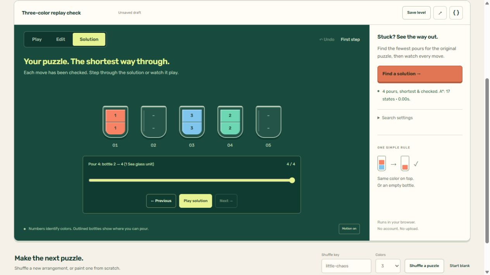

Start with a complete loop
Bring a new level through the whole product: import, play, solve, inspect and save. This recorded synthetic level uses capacity 2 and [[0,1],[1,2],[2,0],[],[]].
- Download the level JSON, then use the studio's Import or export JSON control. Try a legal pour and Undo it.
- Analyze the original level. The recorded run found four shortest checked pours; move the replay slider to the end to inspect the full monochrome bottles.
- Try a one-state search limit: the result must stay unresolved. Or erase one color and see Play/search become unavailable until the inventory is repaired.

Open the studio · Current browser evidence · Reproduce the solver comparison
The problem
A solver report tells you how one supplied puzzle behaves. A level designer needs to change the puzzle, make mistakes, test a move, and try again. PourLab brings those steps into one browser workbench without an installation or account.
The project grows from an earlier independent Python puzzle-analysis prototype. The JavaScript app is a new implementation with interactive editing, manual play, isolated search, checked playback and portable levels. It was built with AI coding assistance.
Try it with your own level
- Choose Make your own or Edit. Choose a color and paint the lowest empty slot. Fill bottles bottom to top. Use the eraser or Undo to revise.
- Balance every used color to a multiple of the capacity. The inventory explains what needs fixing. Add empty bottles when you need room.
- In Play, select a source, then a target. A legal pour transfers the largest top run that fits into an empty bottle or onto the same color.
- Choose Find a solution to solve the original design, regardless of progress in your manual play session. Review every checked move with the slider or playback.
- Save a named copy, export JSON, or share a link containing the level. Browser saves stay on this device and origin.
The goal: full bottles containing one color, plus empty bottles. Small numbers identify the colors throughout, so the puzzle does not rely on color alone.
Why exact search?
Each legal pour has a cost of one. Breadth-first search explores by move count; A* uses a lower bound based on the number of separate color segments. Both methods find a shortest route under the same maximal-pour rules. Search treats bottle permutations as equivalent while retaining the real bottle indices for replay.
This is classical pathfinding, not a trained model or reinforcement learning. A shortest route is a useful design signal; it is not a measured prediction of how hard a puzzle feels to a person.
A stopped search is an open question
The app limits states, elapsed time and path depth. Large valid levels can reach a limit. It reports a solution only after legal replay; it reports impossibility only after exhausting the complete reachable space. Reaching a budget or pressing Stop leaves this run unresolved.
Search runs in a real Web Worker to keep the page interactive. Editing cancels a running search and removes the old solution. The main thread verifies the returned path again before displaying it.
Check the search, not just the animation
A frozen corpus runs both A* and BFS on 40 configurations across 34 distinct layouts. Every solved path is checked by a separate replay implementation. An independent labeled-bottle BFS also checks exact outcomes on 16 selected small configurations; larger cases retain that explicit coverage limit.
One layout exposes why the search budget matters: A* finds 18 checked pours after 479 visited states. BFS reaches its 3,000-state limit; with only that budget raised, it confirms the same 18-pour optimum after 3,513 states. The first BFS result is unresolved, even though a valid route exists. Inspect the frozen inputs, measured results and method.
The repository's 17 regression checks also cover rules, portable inputs and storage recovery. A real data-loss risk was found and repaired: a later save could replace an unreadable library. The app now protects its original raw text, offers a backup and requires a separately confirmed reset. Read the before/after and recovery evidence.
These are synthetic engineering checks. Player feedback and complete accessibility testing are separate work. The next product study is to observe an unfamiliar person create, repair, save and share a level.
Keep your levels portable
A single level can be imported from JSON. A library backup contains up to 50 named levels. Structurally valid incomplete levels remain editable drafts; Play and search wait until their inventory is balanced.
{
"name": "Three-color study",
"capacity": 3,
"bottles": [[0,1,2],[1,2,0],[2,0,1],[],[]]
}Arrays run bottom to top. JSON color indices 0–7 appear as 1–8 on the board. Import rejects unknown fields, unsupported versions, malformed types and oversized input. Names are rendered as text, never HTML.
No level is uploaded by this app. A copied URL includes the level in its hash and can be opened by anyone who has it. Export a JSON backup before clearing browser data.
Design and credits
The opening screen now names the task directly and shows its goal: one color per full bottle. A small playable level starts in Play, with Make your own, Import a puzzle and Find a solution in view. Editing and detailed search limits are available when needed. A warm paper shell, forest-green game surface and rounded Rubik type give the puzzle its own identity.
Google Creative Lab’s Quick, Draw! informed the literal challenge and short contextual instructions; Lichess’s board editor informed a dominant working board with secondary editing tools. Both live products were inspected on 21 October 2026. Their code, artwork and brands are not included. Earlier Cosmos references remain recorded in the repository as superseded design research.
Rubik is self-hosted from the official Google Fonts distribution under its bundled SIL Open Font License 1.1. Bottles, goal diagram, controls and drop mark are original CSS/SVG. No third-party JavaScript runtime is loaded. Earlier Barlow/Manrope styles, glass artwork and Three.js are historical files, inactive in the current studio and guide.
Motion explains a real selection, mode change or legal pour. It does not delay the game state or simulate fluid physics. The visible Motion control can turn feedback off, and reduced-motion visitors start with it off. GOV.UK’s validation guidance informed actionable errors.